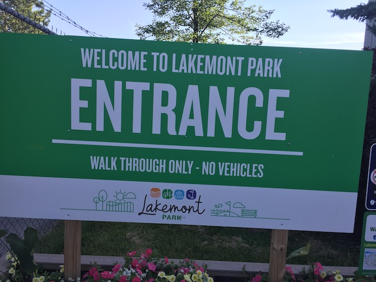
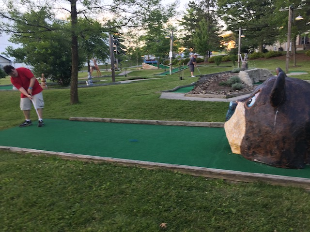

| |
Lakemont Park Review

Lakemont Park is a VERY interesting park. Mostly in the sense that.....it REALLY doesn't feel like a theme park. No seriously. Lakemont Park just flat out DOES NOT feel like a standard amusement park. Or even an amusement park at all! What Lakemont Park honestly reminds me of is.....a local city park. If that local city park decided to add a couple of rides. So in a sense, Lakemont Park is my childhood fantasy. Only with.....old school coasters and not huge modern monsters like in my childhood fantasy. I know this isn't the first time I've compared a theme park to a local park. And....yeah. I stand by Schlossbeck essentially just being a giant playground with a kiddy coaster and some self-operated rides (and it's a ton of fun). Lakemont Park doesn't feel like a playground. No. It f*cking feels like a park that Jason and I would frequent on a day off when we're out and bored. If that park decided to add a few old-school coasters. Cause.....this place really does feel like a cross between a city park, a local Golf'N'Stuff style Family Entertainment Center, and a freaking living roller coaster history museum. I know there's an actual Roller Coaster Museum out there (It does look like a really cool museum. But I don't see myself visiting anytime soon simply because....the part of Texas its in is NOT near any of the theme parks and just seems VERY out of the way with nothing else in the area that appeals to me). But Lakemont Park just feels like.....a leftover historical artifact. An interactive museum exhibit. But yeah. Lakemont Park is just a ton of fun and TOTALLY worth checking out.
Rollercoasters
There is a link to a review of all the Rollercoasters at Lakemont Park.
Historical Coasters
Leap the Dips Review

Rough Coasters
Skyliner Review

Flat Rides
Here are the reviews of all the Flat Rides at Lakemont Park. And the flat ride selection here is ABYSMAL. A couple kiddy flats. That you probably can't even ride. And that's it! But whatever. This is NOT a park for flat rides.
Dark Rides
Lakemont Park has no dark rides.
Water Rides
Lakemont Park has no water rides.
Water Park
>
Yeah. Lakemont Park has no water rides. But amazingly enough, they do have a water park. Sort of. From what I can tell, this water park is essentially just a public pool with a couple water slides. It kind of reminded me of the public pool in my old hometown that has a couple of small water slides (Fun, but nothing special, and I hadn't been there in forever. And since I don't live there anymore, there's even less of a reason to go there). But the water park here just appears to be a few small water slides in a public pool. Honestly, out of all the adjacent water parks to theme parks I've visited, I think the one connected to Lakemont Park just might rank dead-last in desire to hit on a future visit. Oh well. I'm sure it's fun for locals who live nearby and actually have a reason to visit it.
 Honestly, it's kind of amazing that a park of this size and nature has a water park at all. Even if it's something on par with the slides at my old local pool.
Honestly, it's kind of amazing that a park of this size and nature has a water park at all. Even if it's something on par with the slides at my old local pool.
Dining
Not only did I not eat at Lakemont Park, but I don't even think they serve food here at all. Unless you count vending machines as dining options. Ooh! I can buy a Pepsi! How riveting!
Theming and Other Attractions
Here are the reviews of all the other stuff at Lakemont Park. As far as theming goes, there's NOTHING!!! Though there is one interesting thing to note about the parks setting. The park is located right next to the baseball field, Peoples Natural Gas Field (what the f*ck sort of name is that for a ballpark?). This is home to the Minor League baseball team, the Altoona Curves (Honestly, worst non-racist sports team name). And Skyliner is right next to it. So whenever the car goes up the lifthill, it reads "GO CURVES" to cheer on the team whenever they're playing a game. That;s honestly pretty cool and unique as far as setting goes. Let alone the view you get of the Alleghany Mountain peaks in the background. However, when it comes to other stuff to do, this, aside from the roller coasters, is where Lakemont Park shines. Because like I said, this place is very much like a mix between a Golf'N'Stuff and a local park. And as such, they have A LOT!!! First off, Mini Golf. The holes here are honestly pretty good. I just wish I was able to finish a full game instead of having to cut the game short due to time. That Rabbit course really was a lot of fun. They also have Go-Karts. True, the go-karts are nothing special. They don't have amazing go-kart tracks like at Mt. Olympus. But they're still a lot of fun. They also have batting cages. Probably for fans of the Altoona Curves and dream of someday being on the team. Well, practice your batting right here. =) And on top of that, everything that you have at a local park, they have it right here. The park has several basketball courts, some vollyball courts, and a playground similar to that of any standard park.
 Not many parks are right next to a major baseball stadium. That's something new.
Not many parks are right next to a major baseball stadium. That's something new.
 Hey. I'm always happy with any go-karts. =)
Hey. I'm always happy with any go-karts. =)

Very fun mini golf course. Even for those who are horrible at the game.
In Conclusion
Lakemont Park is a really fun little park. It's sort of like a cross between a family entertainment center, a local park, a small park, and a roller coaster museum. Yeah. Think of some sort of local park. If it had a lot of the things a Golf'N'Stuff style place as well as a couple of random roller coasters. Except not even random roller coasters. Because Leap the Dips is NOT just a random roller coaster. It's a freaking rideable museum exhibit. It's riding history as much as its riding a roller coaster. Unfortunately, Lakemont Park is not exactly a super stable park. And I'm going to do something I haven't done in any other park review. Give a take on how the park should be run. So Lakemont Park is not a super profitable place. Much of the rides are periodically down. And for the 2024 season (the year I'm writing this park review), they announced that Leap the Dips is essentially being SBNO. Primarily because it is a very maintenence heavy ride (probably because it's so damn old) and the park is too poor to give the ride the maintenence it needs (Honestly, they REALLY need to retrack Skyliner too. That ride was F*CKING BRUTAL and NEEDED a retrack BADLY!!!). Hell, the park itself is currently SBNO. At this point, Lakemont Park is only running as a local park with some mini-golf and batting cages. If this were just a small little park with ordinary coasters, Lakemont Park would be toast. However, the park is.....in a unique situation because.....Leap the Dips isn't just a unique coaster. And though ACE is a HUGE part of the reason Leap the Dips is still alive with them doing A LOT of fundraising to keep it running. And though I have MANY dissagreements with the "coaster historian preservationist" enthusiasts, particuarly their hatred for RMC and desire to save plenty of sh*tty rides that were rightfully torn down. However, when it comes to this as well as restoring the Giant Dipper @ Belmont Park, I agree with them 1000% and support all the work that they do. But while a coaster getting an ACE plaque may be special to coaster enthusiasts, it offers no protections from being demolished (Conneaut Lake Park has entered the chat). But Leap the Dips isn't just an ACE Landmark. It's a freaking National Historic Landmark, which does offer it some legal protections from being torn down. This is not a common trait for coasters, with I think only one other coaster that has this status. This is why the park isn't just closing it down. And it's not like Leap the Dips hasn't had periods of being SBNO before. It was dormant for 12 years from 1986 to 1998 when it finally reopened and got its status as a National Historic Landmark. But Lakemont Park from all that I'm gathering, just doesn't seem to be making enough money. I know some have floated the idea of relocating Leap the Dips. I honestly don't think that would work. Honestly, my honest opinion on what should happen to Lakemont Park? This'll be controversial. But....buy the land and the park off the current owners, fire them since they clearly don't know how to run the place. And then....honestly, treat the place as a standard city park with a couple roller coasters and rides. But yeah. Remove the profit motive from the park, run it with tax dollars (Certain people are losing their sh*t at the sheer possibility of this. But honestly. It already functions both as a local park as well as a roller coaster museum preserving history. And parks and museums are both already publicly funded with tax dollars. Might as well just make the park that already functionally acts like a combination of the two become one. Especially after its private run and looking to chase after profits has NOT boded well for Lakemont Park. Yeah. I'm sure their management made plenty of bad choices. But it just seems like Lakemont Park would be better off this way. Of course, things could easily change in the future and no matter what happens (provided the park still runs and that Leap the Dips, and preferably Skyliner, are still there). So keep an eye on the park. And hopefully it comes back soon. Incrediblecoasters is rooting for you, Lakemont Park.
Enthusiast FAQs.
*Are there kiddy coaster restrictions? - Yes. You are NOT allowed to ride Little Leaper. AT ALL!!! If you're over 54 inches, you're too tall. As far as I'm concerned, that ride doesn't exist.

Tips
*Make sure to get the credits.
*Be sure to support the park.
*Have Fun!!!!
Theme Park Category:
Small Park
Location
Altoona, Pennsylvania, USA
Last Day Visited
June 24, 2021
Video
I do not have enough footage for a Lakemont Park video. There's really no need for a video of a park this small, but it's not impossible to say that this park will ever get a video of its own.
Complete Update List
2021
East Coast Trip 2021
Here's a link to the parks website.
Home
|